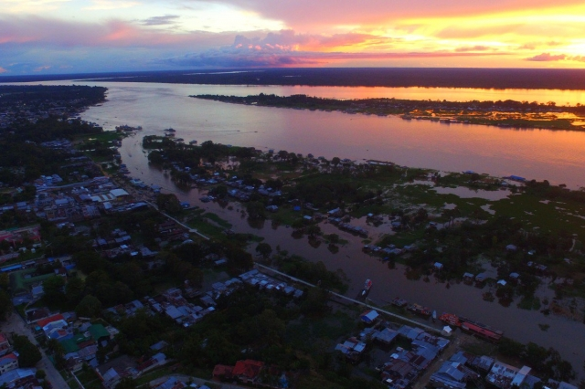
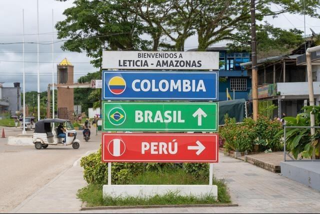

Introducción
Leticia es un municipio fronterizo colombiano, es la capital del departamento del Amazonas.
Se encuentra localizado en el extremo sur del país sobre las márgenes del río Amazonas,
al sur del área no municipalizada de Tarapacá y al oriente del municipio de Puerto Nariño.
Se ha consolidado como el principal destino turístico de selva del país, a pesar de estar
alejada de los principales centros urbanos de Colombia, sin comunicación por carretera.
Constituye un nexo comercial importante con Brasil, debido a su situación de ciudad
limítrofe sobre el río Amazonas y formando el trifinio conocido como Tres Fronteras.
La ciudad tiene un gran crecimiento demográfico y técnicamente forma una sola ciudad con
el municipio brasileño de Tabatinga.

Ubicado en el extremo sur de Colombia, Leticia es la capital del Amazonas y es frontera
de Brasil y Peru.

Letrero indicando dirección de Brasil y Peru.